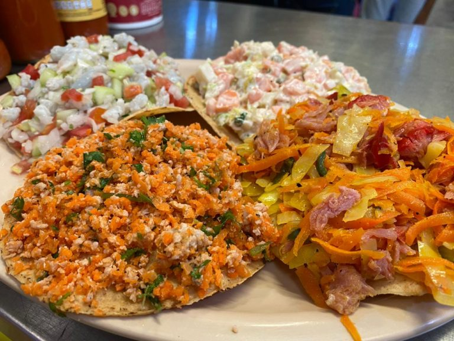

Mazatlán: Gastronomía

Mazatlán es muy conocido por su exquisita gastronomía, por ser un estado costero tiene una riqueza y una gran variedad de pescados y mariscos, que son base de sus platillos más típicos. Su gastronomía es resultado de una combinación entre la historia prehispánica del estado y la colonia, teniendo delicias y destacando sus platillos más típicos de Mazatlán.